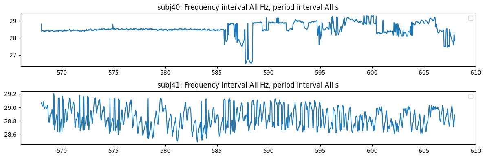
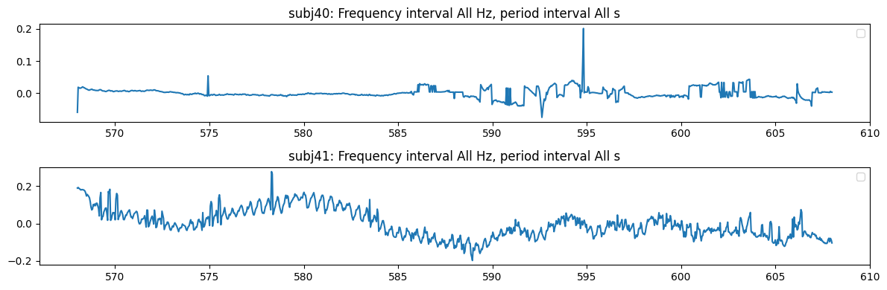
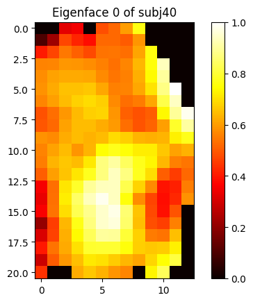
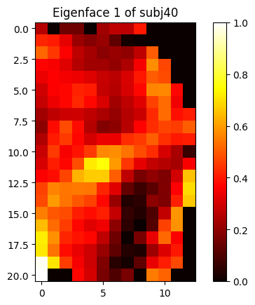
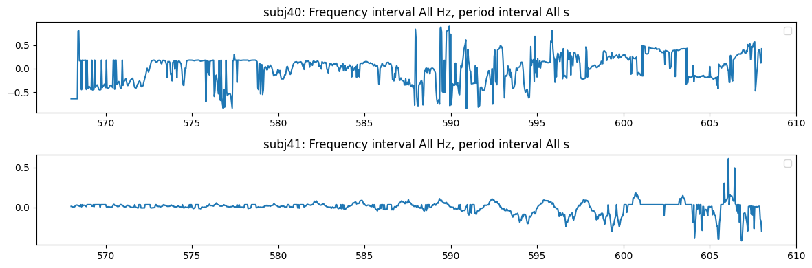
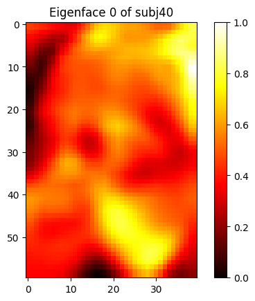
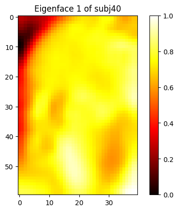
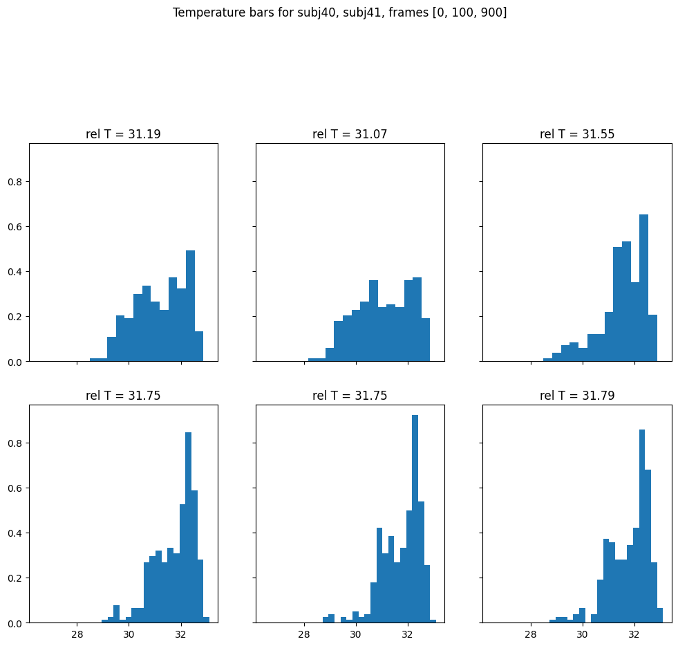
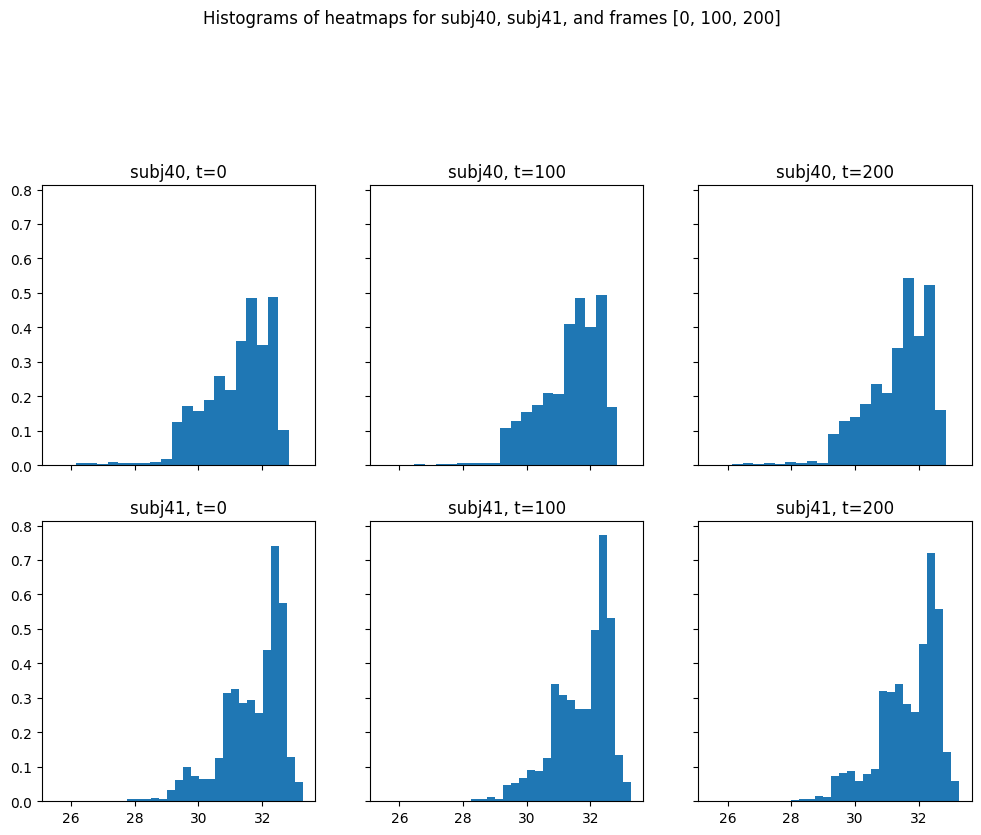
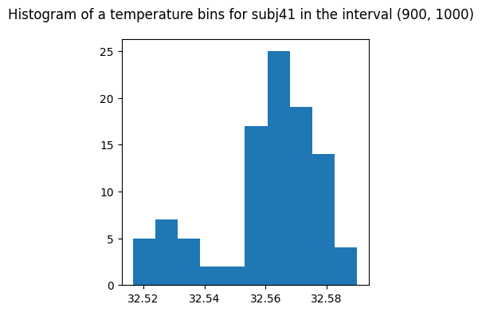

from nbdev_fhemb.embedding_ex import dg0, pca, percentile_emb, bin_emb, pca_emb, combined_emb0, combined_emb1Inspect Embeddings
Note
Note that EmbeddingCollection invokes .get_ts_subjs, .binedges, .plot_signal methods through its Dynamic Attribute Forwarding.
The Numeric Data
A request for a single percentile returns a Pandas dataframe
percentile_emb.get_ts_subjs('p55') # percentiles are prefixed by 'p'| subj40 | subj41 | subj42 | subj43 | subj44 | subj47 | subj48 | subj49 | subj50 | subj51 | ... | subj65 | subj66 | subj67 | subj68 | subj69 | subj70 | subj71 | subj73 | subj74 | subj75 | |
|---|---|---|---|---|---|---|---|---|---|---|---|---|---|---|---|---|---|---|---|---|---|
| 0 | 31.506458 | 32.125240 | 31.800814 | 32.560140 | 32.786428 | 32.909038 | 31.316922 | 32.117474 | 32.503437 | 32.068295 | ... | 31.930644 | 31.914812 | 32.245775 | 31.501505 | 32.069073 | 31.687185 | 31.310745 | 31.930449 | 32.181499 | 31.233722 |
| 1 | 31.182337 | 32.105428 | 31.784720 | 32.560905 | 32.789658 | 32.899582 | 31.333058 | 32.113586 | 32.477349 | 32.074715 | ... | 31.918918 | 31.875685 | 32.241907 | 31.506657 | 32.078602 | 31.687185 | 31.299582 | 31.930449 | 32.187313 | 31.242910 |
| 2 | 31.189138 | 32.117085 | 31.717500 | 32.548653 | 32.789658 | 32.895798 | 31.325089 | 32.106983 | 32.495766 | 32.060902 | ... | 31.915594 | 31.899557 | 32.241907 | 31.509430 | 32.070824 | 31.683247 | 31.291605 | 31.926540 | 32.185375 | 31.231324 |
| 3 | 31.190339 | 32.105816 | 31.722616 | 32.549036 | 32.774844 | 32.896744 | 31.332262 | 32.098045 | 32.504204 | 32.097657 | ... | 31.915203 | 31.919113 | 32.237652 | 31.494174 | 32.070824 | 31.683247 | 31.280437 | 31.909728 | 32.179562 | 31.232523 |
| 4 | 31.185738 | 32.120969 | 31.737957 | 32.544440 | 32.771424 | 32.897689 | 31.343811 | 32.098434 | 32.492699 | 32.087742 | ... | 31.906990 | 31.854143 | 32.249256 | 31.490805 | 32.072964 | 31.691124 | 31.267667 | 31.918722 | 32.195061 | 31.235718 |
| ... | ... | ... | ... | ... | ... | ... | ... | ... | ... | ... | ... | ... | ... | ... | ... | ... | ... | ... | ... | ... | ... |
| 995 | 31.781578 | 32.151637 | 31.801207 | 32.846565 | 32.790037 | 32.948723 | 31.836508 | 32.069462 | 32.504204 | 32.164051 | ... | 31.997012 | 31.864719 | 32.346948 | 31.460073 | 32.133007 | 31.903078 | 31.385396 | 31.914812 | 32.334225 | 31.122852 |
| 996 | 31.785505 | 32.152024 | 31.802384 | 32.838985 | 32.808260 | 32.952688 | 31.824745 | 32.070824 | 32.497300 | 32.160172 | ... | 31.981410 | 31.870398 | 32.338081 | 31.441220 | 32.143294 | 31.870986 | 31.382414 | 31.914812 | 32.334225 | 31.113629 |
| 997 | 31.809054 | 32.151248 | 31.796889 | 32.861725 | 32.808260 | 32.964014 | 31.771562 | 32.055064 | 32.503437 | 32.148533 | ... | 31.992916 | 31.875685 | 32.353500 | 31.445390 | 32.135531 | 31.847483 | 31.389373 | 31.922630 | 32.340008 | 31.154911 |
| 998 | 31.785505 | 32.159784 | 31.792963 | 32.846186 | 32.827041 | 32.956276 | 31.724386 | 32.042216 | 32.489629 | 32.179562 | ... | 32.008709 | 31.877837 | 32.361210 | 31.450945 | 32.131648 | 31.871769 | 31.382414 | 31.910902 | 32.328438 | 31.168527 |
| 999 | 31.800225 | 32.143877 | 31.804739 | 32.838985 | 32.831591 | 32.952877 | 31.738940 | 32.066933 | 32.488862 | 32.173162 | ... | 31.989016 | 31.873923 | 32.344441 | 31.455510 | 32.135531 | 31.894667 | 31.378437 | 31.918722 | 32.322651 | 31.164523 |
1000 rows × 32 columns
combined_emb0.get_ts_subjs('p55'){'pcomponents_ts': Empty DataFrame
Columns: []
Index: [],
'percentiles_ts': subj40 subj41 subj42 subj43 subj44 subj47 \
0 31.506458 32.125240 31.800814 32.560140 32.786428 32.909038
1 31.182337 32.105428 31.784720 32.560905 32.789658 32.899582
2 31.189138 32.117085 31.717500 32.548653 32.789658 32.895798
3 31.190339 32.105816 31.722616 32.549036 32.774844 32.896744
4 31.185738 32.120969 31.737957 32.544440 32.771424 32.897689
.. ... ... ... ... ... ...
995 31.781578 32.151637 31.801207 32.846565 32.790037 32.948723
996 31.785505 32.152024 31.802384 32.838985 32.808260 32.952688
997 31.809054 32.151248 31.796889 32.861725 32.808260 32.964014
998 31.785505 32.159784 31.792963 32.846186 32.827041 32.956276
999 31.800225 32.143877 31.804739 32.838985 32.831591 32.952877
subj48 subj49 subj50 subj51 ... subj65 subj66 \
0 31.316922 32.117474 32.503437 32.068295 ... 31.930644 31.914812
1 31.333058 32.113586 32.477349 32.074715 ... 31.918918 31.875685
2 31.325089 32.106983 32.495766 32.060902 ... 31.915594 31.899557
3 31.332262 32.098045 32.504204 32.097657 ... 31.915203 31.919113
4 31.343811 32.098434 32.492699 32.087742 ... 31.906990 31.854143
.. ... ... ... ... ... ... ...
995 31.836508 32.069462 32.504204 32.164051 ... 31.997012 31.864719
996 31.824745 32.070824 32.497300 32.160172 ... 31.981410 31.870398
997 31.771562 32.055064 32.503437 32.148533 ... 31.992916 31.875685
998 31.724386 32.042216 32.489629 32.179562 ... 32.008709 31.877837
999 31.738940 32.066933 32.488862 32.173162 ... 31.989016 31.873923
subj67 subj68 subj69 subj70 subj71 subj73 \
0 32.245775 31.501505 32.069073 31.687185 31.310745 31.930449
1 32.241907 31.506657 32.078602 31.687185 31.299582 31.930449
2 32.241907 31.509430 32.070824 31.683247 31.291605 31.926540
3 32.237652 31.494174 32.070824 31.683247 31.280437 31.909728
4 32.249256 31.490805 32.072964 31.691124 31.267667 31.918722
.. ... ... ... ... ... ...
995 32.346948 31.460073 32.133007 31.903078 31.385396 31.914812
996 32.338081 31.441220 32.143294 31.870986 31.382414 31.914812
997 32.353500 31.445390 32.135531 31.847483 31.389373 31.922630
998 32.361210 31.450945 32.131648 31.871769 31.382414 31.910902
999 32.344441 31.455510 32.135531 31.894667 31.378437 31.918722
subj74 subj75
0 32.181499 31.233722
1 32.187313 31.242910
2 32.185375 31.231324
3 32.179562 31.232523
4 32.195061 31.235718
.. ... ...
995 32.334225 31.122852
996 32.334225 31.113629
997 32.340008 31.154911
998 32.328438 31.168527
999 32.322651 31.164523
[1000 rows x 32 columns],
'binheights_ts': Empty DataFrame
Columns: []
Index: []}A request for a list of percentiles returns a dictionary of dataframes
percentile_emb.get_ts_subjs(['p50','p55']){'p50': subj40 subj41 subj42 subj43 subj44 subj47 \
0 31.252890 32.008514 31.667484 32.511105 32.745951 32.861725
1 31.010395 32.016308 31.663542 32.514938 32.736443 32.861723
2 31.018439 31.992916 31.584604 32.491932 32.736443 32.861725
3 31.048591 32.004616 31.568792 32.511105 32.738344 32.857935
4 31.052611 31.992916 31.592506 32.495766 32.736441 32.854145
.. ... ... ... ... ... ...
995 31.732450 32.086380 31.754076 32.827610 32.747852 32.922272
996 31.732450 32.059151 31.742283 32.823814 32.764961 32.929832
997 31.722616 32.059151 31.746214 32.831402 32.783960 32.929832
998 31.718681 32.074715 31.738350 32.827610 32.785858 32.929831
999 31.730484 32.063042 31.734417 32.827610 32.791555 32.918491
subj48 subj49 subj50 subj51 ... subj65 subj66 \
0 31.216936 32.066933 32.457382 31.998767 ... 31.836508 31.781578
1 31.208939 32.061096 32.442017 31.996817 ... 31.775686 31.758007
2 31.216934 32.061096 32.442017 31.969505 ... 31.775686 31.801207
3 31.208939 32.039684 32.449699 31.946077 ... 31.779614 31.785505
4 31.220933 32.035789 32.445858 31.994865 ... 31.779614 31.761936
.. ... ... ... ... ... ... ...
995 31.655657 31.983165 32.430485 32.068878 ... 31.877642 31.730484
996 31.649740 31.955841 32.430485 32.076658 ... 31.869811 31.730484
997 31.620152 31.963650 32.422794 32.086382 ... 31.871769 31.746214
998 31.614229 31.977312 32.422794 32.088326 ... 31.858061 31.736383
999 31.562860 31.975361 32.422794 32.068878 ... 31.856102 31.736383
subj67 subj68 subj69 subj70 subj71 subj73 \
0 32.198936 31.434074 32.014360 31.606332 31.150906 31.846307
1 32.202808 31.426132 32.018257 31.612255 31.122852 31.844347
2 32.191189 31.412229 32.008514 31.608306 31.130869 31.848267
3 32.206684 31.430105 32.024105 31.600409 31.118843 31.842387
4 32.210556 31.428118 32.018257 31.608307 31.114832 31.848267
.. ... ... ... ... ... ...
995 32.305286 31.316724 32.084436 31.824745 31.272855 31.836508
996 32.303356 31.314732 32.086380 31.781578 31.270860 31.816902
997 32.311073 31.334652 32.092215 31.765865 31.266868 31.812979
998 32.303356 31.310745 32.101933 31.769794 31.258884 31.824745
999 32.318792 31.328677 32.082493 31.750145 31.264873 31.816902
subj74 subj75
0 32.113586 31.022463
1 32.082493 31.022463
2 32.098045 31.030504
3 32.086380 31.042564
4 32.082493 31.030504
.. ... ...
995 32.276318 30.913694
996 32.276318 30.909658
997 32.256992 30.958052
998 32.264725 30.945959
999 32.256992 30.949991
[1000 rows x 32 columns],
'p55': subj40 subj41 subj42 subj43 subj44 subj47 \
0 31.506458 32.125240 31.800814 32.560140 32.786428 32.909038
1 31.182337 32.105428 31.784720 32.560905 32.789658 32.899582
2 31.189138 32.117085 31.717500 32.548653 32.789658 32.895798
3 31.190339 32.105816 31.722616 32.549036 32.774844 32.896744
4 31.185738 32.120969 31.737957 32.544440 32.771424 32.897689
.. ... ... ... ... ... ...
995 31.781578 32.151637 31.801207 32.846565 32.790037 32.948723
996 31.785505 32.152024 31.802384 32.838985 32.808260 32.952688
997 31.809054 32.151248 31.796889 32.861725 32.808260 32.964014
998 31.785505 32.159784 31.792963 32.846186 32.827041 32.956276
999 31.800225 32.143877 31.804739 32.838985 32.831591 32.952877
subj48 subj49 subj50 subj51 ... subj65 subj66 \
0 31.316922 32.117474 32.503437 32.068295 ... 31.930644 31.914812
1 31.333058 32.113586 32.477349 32.074715 ... 31.918918 31.875685
2 31.325089 32.106983 32.495766 32.060902 ... 31.915594 31.899557
3 31.332262 32.098045 32.504204 32.097657 ... 31.915203 31.919113
4 31.343811 32.098434 32.492699 32.087742 ... 31.906990 31.854143
.. ... ... ... ... ... ... ...
995 31.836508 32.069462 32.504204 32.164051 ... 31.997012 31.864719
996 31.824745 32.070824 32.497300 32.160172 ... 31.981410 31.870398
997 31.771562 32.055064 32.503437 32.148533 ... 31.992916 31.875685
998 31.724386 32.042216 32.489629 32.179562 ... 32.008709 31.877837
999 31.738940 32.066933 32.488862 32.173162 ... 31.989016 31.873923
subj67 subj68 subj69 subj70 subj71 subj73 \
0 32.245775 31.501505 32.069073 31.687185 31.310745 31.930449
1 32.241907 31.506657 32.078602 31.687185 31.299582 31.930449
2 32.241907 31.509430 32.070824 31.683247 31.291605 31.926540
3 32.237652 31.494174 32.070824 31.683247 31.280437 31.909728
4 32.249256 31.490805 32.072964 31.691124 31.267667 31.918722
.. ... ... ... ... ... ...
995 32.346948 31.460073 32.133007 31.903078 31.385396 31.914812
996 32.338081 31.441220 32.143294 31.870986 31.382414 31.914812
997 32.353500 31.445390 32.135531 31.847483 31.389373 31.922630
998 32.361210 31.450945 32.131648 31.871769 31.382414 31.910902
999 32.344441 31.455510 32.135531 31.894667 31.378437 31.918722
subj74 subj75
0 32.181499 31.233722
1 32.187313 31.242910
2 32.185375 31.231324
3 32.179562 31.232523
4 32.195061 31.235718
.. ... ...
995 32.334225 31.122852
996 32.334225 31.113629
997 32.340008 31.154911
998 32.328438 31.168527
999 32.322651 31.164523
[1000 rows x 32 columns]}Binheights
this type of embedding has binedges, which define the bin intervals. Bin intervals do not have to have the same width.
bin_emb.binedges['subj66']array([[27.018463, 27.336157],
[27.336157, 27.65385 ],
[27.65385 , 27.971544],
[27.971544, 28.289238],
[28.289238, 28.606934],
[28.606934, 28.924627],
[28.924627, 29.242321],
[29.242321, 29.560015],
[29.560015, 29.877708],
[29.877708, 30.195402],
[30.195402, 30.513096],
[30.513096, 30.83079 ],
[30.83079 , 31.148483],
[31.148483, 31.466177],
[31.466177, 31.78387 ],
[31.78387 , 32.101566],
[32.101566, 32.41926 ],
[32.41926 , 32.736954],
[32.736954, 33.054646],
[33.054646, 33.37234 ]], dtype=float32)combined_emb1.binedges['binheights_ts']['subj66']array([[27.018463, 27.336157],
[27.336157, 27.65385 ],
[27.65385 , 27.971544],
[27.971544, 28.289238],
[28.289238, 28.606934],
[28.606934, 28.924627],
[28.924627, 29.242321],
[29.242321, 29.560015],
[29.560015, 29.877708],
[29.877708, 30.195402],
[30.195402, 30.513096],
[30.513096, 30.83079 ],
[30.83079 , 31.148483],
[31.148483, 31.466177],
[31.466177, 31.78387 ],
[31.78387 , 32.101566],
[32.101566, 32.41926 ],
[32.41926 , 32.736954],
[32.736954, 33.054646],
[33.054646, 33.37234 ]], dtype=float32)Plots
A projection to a chosen embedding component (feature)
Percentiles
percentile_emb.plot_signal(
subjs=[40,41], # specify subject(s) to plot
feature='p0' # specify feature to plot (e.g., 'p0' for 0th percentile
)
(<Figure size 1200x400 with 2 Axes>,
[<Axes: title={'center': 'subj40: Frequency interval All Hz, period interval All s'}>,
<Axes: title={'center': 'subj41: Frequency interval All Hz, period interval All s'}>])combined_emb1.plot_signal(
subjs=[40,41], # specify subject(s) to plot
feature='p0' # specify feature to plot (e.g., 'p0' for 0th percentile
)
{'percentiles_ts': (<Figure size 1200x400 with 2 Axes>,
[<Axes: title={'center': 'subj40: Frequency interval All Hz, period interval All s'}>,
<Axes: title={'center': 'subj41: Frequency interval All Hz, period interval All s'}>])}Eigenfaces
pca_emb.plot_signal(
subjs=[40,41], # specify subject(s) to plot: may be specified also as intervals, e.g., [(40, 45), 47]
feature='pc2' # specify feature to plot: principal components are prefixed by 'pc'
)
(<Figure size 1200x400 with 2 Axes>,
[<Axes: title={'center': 'subj40: Frequency interval All Hz, period interval All s'}>,
<Axes: title={'center': 'subj41: Frequency interval All Hz, period interval All s'}>])combined_emb1.plot_signal(
subjs=[40,41], # specify subject(s) to plot: may be specified also as intervals, e.g., [(40, 45), 47]
feature='pc2' # specify feature to plot: principal components are prefixed by 'pc'
)
{'pcomponents_ts': (<Figure size 1200x400 with 2 Axes>,
[<Axes: title={'center': 'subj40: Frequency interval All Hz, period interval All s'}>,
<Axes: title={'center': 'subj41: Frequency interval All Hz, period interval All s'}>])}Heatmap time series are embedded into eigenface coordinate system by projecting each heatmap onto the eigenface basis that can be visualized.
pca_emb.visualize_eigenfaces(
subjs=[40], # specify subject(s) to plot: may be specified also as intervals, e.g., [(40, 45), 47]
components=[0,1] # specify principle components, i.e., eigenfaces
)

{'subj40': [<Figure size 640x480 with 2 Axes>,
<Figure size 640x480 with 2 Axes>]}We can also visualize eigenfaces from a
Datasourceobject with a nonstationary shape. Such aDatasource, like for examplefacebbox_t, must be “stationarized” by converting intoDatasourceResizedvia.rsfacebbox_t.
pca_emb_rs = dg0.facebbox_t.rsfacebbox_t.create_pca_embedding(factory=pca)[0]pca_emb_rs.plot_signal(
subjs=[40,41], # specify subject(s) to plot: may be specified also as intervals, e.g., [(40, 45), 47]
feature='pc2' # specify feature to plot: principal components are prefixed by 'pc'
)
(<Figure size 1200x400 with 2 Axes>,
[<Axes: title={'center': 'subj40: Frequency interval All Hz, period interval All s'}>,
<Axes: title={'center': 'subj41: Frequency interval All Hz, period interval All s'}>])pca_emb_rs.visualize_eigenfaces(
subjs=[40], # specify subject(s) to plot: may be specified also as intervals, e.g., [(40, 45), 47]
components=[0,1] # specify principle components, i.e., eigenfaces
)

{'subj40': [<Figure size 640x480 with 2 Axes>,
<Figure size 640x480 with 2 Axes>]}Summaries of a binheight embedding (bin_emb) over chosen frames (frms)
bin_emb.plot_temperaturebars(
subjs=[40, 41], # specify subject(s) to plot: may be specified also as intervals, e.g., [(40, 45), 47]
frms=[0,100,900], # specify frame(s) to plot (e.g., [0, 100, 900])
centralized=False # specify whether to centralize the data (default: False): each bin around its own mean (centralized=True)
)
Summaries of a selected embedding (normfacevec_t) over chosen frames (frms)
dg0.facebbox_t.rsfacebbox_t.normfacevec_ts.plot_temperaturehist(
subjs=[40, 41], # sspecify subject(s) to plot: may be specified also as intervals, e.g., [(40, 45), 47]
frms=[0,100,200] # specify frames to plot (e.g., [0, 100, 200]
)
A summary of a selected embedding component (feature) over a chosen frame interval (intvl)
percentile_emb.plot_intvlhist(
subjs=[41], # specify subject(s) to plot: may be specified also as intervals, e.g., [(40, 45), 47]
intvl=(900,1000), # specify interval of frames to plot (e.g., (900, 1000))
feature='p90' # specify feature to plot (e.g., 'p90' for 90th percentile
)